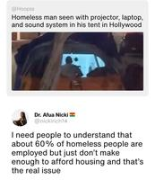

0

Yes, Microsoft announced it's fixing common Windows 11 complaints. But what about getting rid of that requirement to have a Microsoft account before installing Windows 11? While Microsoft didn't mention that at all, the senior editor at the blog Windows Central reports there's "a number of people" internally pushing at Microsoft to relax that requirement:
Microsoft Vice President and overall developer legend Scott Hanselman has posted on X in response to someone asking him about possibly relaxing the Microsoft account requirements, saying "Ya I hate that. Working on it...." [Hanselman made that remark Friday, to his 328,200 followers.]
The blog notes "It would be very easy for Microsoft to remove this requirement from a technical perspective, it's just whether or not the company can agree to make the change that needs to be decided."
Elsewhere on X someone told Hanselman they wanted to see Windows "cut out the borderline malware tactics we've seen in recent years to push things like Edge, Bing, ads into the start menu, etc." Hanselman's reply? "Yes a calmer and more chill OS with fewer upsells is a goal."
Q: When will we see first changes? for now it's just words...
Hanselman: This month and every month this year.
Read more of this story at Slashdot.
A man crossing the street one San Francisco night spotted a self-driving car — and decided to confront its passenger, 37-year-old tech worker Doug Fulop. The New York Times reports the man yelled that "he wanted to kill Fulop and the other two passengers for giving money to a robot."
A taxi driver would have simply driven away. But Fulop's vehicle had no driver — it was a self-driving Waymo... Self-driving cars are designed to stop moving if a person is nearby. People can take advantage of that function to harass and threaten their passengers.... It was unsettling to be trapped inside a Waymo during an attack, Fulop said. "If he had kept hammering on one window instead of alternating, I'm sure he would have eventually broken through," he said. The attacker did not appear to be on drugs or otherwise impaired, but seemed to be overtaken by extreme anger at the self-driving car, Fulop said.
It did not seem safe to get out and run, he added, since the man was trying to open the locked doors and said he wanted to kill the passengers. They called 911 and Waymo's support line, Fulop said. Waymo told them that it would not manually direct the car away if someone was standing nearby, and that the passengers would be OK with the doors locked. The car's software does not allow riders to jump into the driver's seat and take over during an incident. The attack lasted around six minutes. By then, bystanders had begun cheering on the man, Fulop said. That distracted the man, who moved far enough away from the car that it could finally drive away...
Fulop said he had stopped using Waymo for a time after the January attack and would avoid the service at night unless the company changed its policy of not intervening when a hostile person threatened riders. "As passengers, we deserve more safety than that if someone is trying to attack us," he said. "This can't be the policy to be trapped there."
The article remembers other incidents — including a 2024 video showing three women screaming as their autonomous taxi is spray-painted by vandals. And technology author/speaker Anders Sorman-Nilsson says in Los Angeles five men on e-bikes surrounded his Waymo and forced it to stop. The author felt safe inside the vehicle, according to the times, which adds "He felt reassured knowing that Waymo's many exterior cameras were recording the men. After around five minutes, he said, they gave up and rode away."
Read more of this story at Slashdot.
"Billionaire Elon Musk has announced plans to build a $20 billion chip plant in Austin, Texas" reports a local news station:
Musk announced on Saturday night during a livestream on his social media platform X that the plant, called "Terafab," will be built near Tesla's campus and gigafactory in eastern Travis County. The long-anticipated project is a joint venture between Musk-owned properties Tesla, SpaceX and xAI... The Terafab plant is expected to begin production in 2027.
Musk "has said the semiconductor industry is moving too slow to keep up with the supply of chips he expects to need," writes Bloomberg — quoting Musk as saying "We either build the Terafab or we don't have the chips, and we need the chips, so we build the Terafab."
Musk detailed some specific plans, including producing chips that can support 100 to 200 gigawatts a year of computing power on Earth, and chips that can support a terawatt in space, but gave no timelines for the facility or its output... The facility is expected to make two types of chips, one of which will be optimized for edge and inference, primarily for his vehicle, robotaxi and Optimus humanoid robots. The other will be a high-power chip, designed for space that could be used by SpaceX and xAI... Musk said he expects xAI to use the vast majority of the chips.
During the presentation, Musk also unveiled a speculative rendering of a future "mini" AI data center satellite, one piece of a much larger satellite system that he wants SpaceX to build to do complex computing in space. In January, SpaceX requested a license from the Federal Communications Commission to launch one million data center satellites into orbit around Earth. Musk said that the mini satellite he revealed would have the capacity for 100 kilowatts of power. "We expect future satellites to probably go to the megawatt range," Musk said.
Raising money to build and launch AI data centers in space is one of the driving forces behind SpaceX's planned IPO later this year. SpaceX is expected to raise as much as $50 billion in a record-setting IPO this summer which could value it at more than $1.75 trillion, Bloomberg News reported earlier.
Read more of this story at Slashdot.
A new bill proposed in California "goes after big tech companies" writes Semafor. Supported by Y Combinator, Cory Doctorow , and the nonprofit advocacy group Fight for the Future, it's called the "BASED" act — an acronym which stands for "Blocking Anticompetitive Self-preferencing by Entrenched Dominant platforms."
As announced by San Francisco state representative Scott Wiener, the bill "will restore competition to the digital marketplace by prohibiting any digital platform with a market capitalization greater than $1 trillion and serving 100 million or more monthly users in the U.S., from favoring their own products and services on the platforms they operate."
More from Scott Wiener;s announcement:
For years, giant digital platforms like Apple, Amazon, Google, and Meta have used their immense power to promote their own products and services while stifling competitors — a practice also known as self-preferencing. The result has been higher prices, diminished service, and fewer options for consumers, and less innovation across the technology ecosystem.
Self-preferencing also locks startups and mid-sized companies out of the online marketplace unless they play by rules set by their competitors. As a new generation of AI-powered startups seeks to enter the marketplace, their success — and public access to the innovations they produce — depends on their ability to compete on an even playing field.
"Anticompetitive behavior is everywhere on the internet," said Senator Wiener, "from rigged search results, to manipulative nudges boosting the 'house' product, to anti-discount policies that raise prices, to the dreaded green bubble that 'breaks' the group chat. When the world's largest digital platforms rig the game to favor their own products and services, we all lose. By prohibiting these anticompetitive practices, the BASED Act will protect competition online, empower consumers and startups, and promote innovations to improve all our lives."
The announcement includes a quote from Teri Olle, VP of the nonprofit Economic Security California Action, saying the act would "safeguard merit-based market competition. This legislation stands for a simple principle: owning the stadium doesn't mean that you get to rig the game."
Some conduct prohibited by the proposed bill includes
Manipulating the order of search results to favor a provider's products or services, irrespective of a merit-based process,
Using non-public data generated by third-party sellers — including sales volumes, pricing, and customer behavior — to develop competing products that are subsequently boosted above the third-party sellers' product...
And the announcement also notes that "under the terms of the bill, providers could not prevent consumers from obtaining a portable copy of their own data or restrict voluntary data sharing (by consumers) with third parties."
Read on for reactions from DuckDuckGo, Proton, Yelp, Y Combinator, and Cory Doctorow.
Read more of this story at Slashdot.
"Google is beginning to replace news headlines in its search results with ones that are AI-generated," reports the Verge:
After doing something similar in its Google Discover news feed, it's starting to mess with headlines in the traditional "10 blue links," too. We've found multiple examples where Google replaced headlines we wrote with ones we did not, sometimes changing their meaning in the process. For example, Google reduced our headline "I used the 'cheat on everything' AI tool and it didn't help me cheat on anything" to just five words: "'Cheat on everything' AI tool." It almost sounds like we're endorsing a product we do not recommend at all.
What we are seeing is a "small" and "narrow" experiment, one that's not yet approved for a fuller launch, Google spokespeople Jennifer Kutz, Mallory De Leon, and Ned Adriance tell The Verge. They would not say how "small" that experiment actually is. Over the past few months, multiple Verge staffers have seen examples of headlines that we never wrote appear in Google Search results — headlines that do not follow our editorial style, and without any indication that Google replaced the words we chose. And Google says it's tweaking how other websites show up in search, too, not just news.
The good news, for now, is that these changed headlines seem to be few and far between, and they're not yet the kind of tripe we've seen in Google Discover. (For example, Google Discover told me this week that the PlayStation Portal was getting a 1080p streaming mode, when it actually got a higher bitrate mode instead.) Compared to that and other lying Google Discover headlines like "US reverses foreign drone ban" — on a story reporting the opposite — the nonsense headlines we're seeing in Google Search are downright tame.
The article points out that Google "originally told us its AI headlines in Google Discover were an experiment too. A month later, it told us those AI headlines are now a feature..."
"Google confirmed that the test uses generative AI, but claimed that 'if we were to actually launch something based on this experiment, it would not be using a generative model and we would not be creating headlines with gen AI'..."
Read more of this story at Slashdot.
CNBC reports:
Amazon has acquired Rivr, a Swiss robotics company developing machines for "doorstep delivery," the company confirmed Thursday... It announced the deal in a notice sent to third-party delivery contractors... "We believe this technology, when working alongside your [delivery associates], has the potential to further improve safety outcomes and the overall customer experience, particularly in the last steps of the delivery process...." In its notice to delivery service partner owners, Amazon said Rivr's technology, which includes a four-legged robot on wheels, will allow it to research and test how the devices can be integrated into delivery operations, including "helping [delivery associates] carry packages from delivery vehicles to customer doorsteps."
Read more of this story at Slashdot.
America's cable TV industry "is undergoing its most dramatic collapse in history," reports Cord Cutters News, "with operators large and small waving the white flag on traditional TV service and pointing their customers toward streaming platforms instead." Just in 2025 Comcast lost 1.25 million pay-TV subscribers (ending the year with just 11.3 million), while Charter Spectrum also lost hundreds of thousands of customers each quarter.
But "for smaller regional operators, who lack the scale and diversified revenue streams of giants like Comcast, those kinds of losses are simply unsurvivable," they write. And "the companies that once delivered hundreds of channels through coaxial cables are now either shutting down entirely or reinventing themselves as internet providers."
Pay-TV subscriptions have plummeted from nearly 90% of U.S. households in the mid-2010s to roughly half by the end of 2025, resulting in billions in lost revenue and forcing many smaller operators to conclude that continuing linear TV services is no longer viable... [This year over U.S. 50 cable TV companies — primarily smaller and midsize providers — are "expected to cease operations entirely or shut down their television services," Cord Cutters News reported earlier.] YouTube TV's pricing is so competitive that the platform is projected to have close to 12.6 million subscribers by the end of 2026, positioning it to become the largest paid TV distributor in the United States. Exclusive content deals, such as YouTube TV's acquisition of NFL Sunday Ticket rights, have further eroded the value proposition of traditional cable at every level of the market... As older cable subscribers age out of the market, there is no new generation of customers waiting to replace them...
[Cable TV] operators like WOW! are betting that their physical infrastructure — now increasingly upgraded to fiber — is more valuable as an internet delivery system than as a cable TV platform. [WOW! serves customers across Michigan, Ohio, Illinois, and Alabama — but is "phasing out its proprietary streaming live TV service and directing all customers toward YouTube TV," the article notes.] Industry observers see this as part of a broader trend: operators shedding unprofitable video segments to focus on broadband, where returns and network investments are prioritized.
By the end of 2026, non-pay-TV households are expected to surge to 80.7 million, outnumbering traditional pay-TV subscribers at 54.3 million — a milestone that would have seemed unthinkable just a decade ago. For the cable companies still standing, the math is now inescapable: the era of the cable bundle is ending, and the only real question left is how gracefully each operator manages its exit.
Read more of this story at Slashdot.
"It is the talk of the town today — the loud boom, the flash of light in the sky experienced by a lot of folks across the Houston area this afternoon," says a local Texas newscaster. "And then there was this — a home in northwest Harris county hit by something that crashed through their roof."
Travelling at very high speed, the six-pound meteorite crashed through their roof and through their attic, crashing again through the ceiling of the floor below. It then bounced off the floor, hit the ceiling again — and then fell onto the bed.
CBS News reports:
NASA said in a social media post that the meteor became visible at 49 miles above Stagecoach, northwest of Houston, at 4:40 p.m. local time. The meteor moved southeast at 35,000 miles per hour, breaking apart 29 miles above Bammel, just west of Cypress Station, NASA said. "The fragmentation of the meteor — which weighed about a ton with a diameter of 3 feet — created a pressure wave that caused booms heard by some in the area," NASA said in the post. Across the Houston area, residents described hearing a low, rumbling sound that many compared to thunder, even though the skies were clear, according to CBS affiliate KHOU.
Earlier this week, an asteroid weighing about 7 tons and traveling at 45,000 mph traveled over multiple states. And last June, a bright meteor was seen across the southeastern U.S. and exploded over Georgia, creating similar booms heard by residents in the area.
Read more of this story at Slashdot.
An anonymous reader quotes a report from Engadget: There could be one more step required before creating an account and posting on Reddit in the future. According to Reddit's CEO, Steve Huffman, the social media platform is exploring different ways to verify a user is human and not a bot. When asked by the TBPN podcast how to confirm that it's a human using Reddit, Huffman responded with several verification methods with varying degrees of heavy-handedness.
"The most lightweight way is with something like Face ID or Touch ID," Huffman said during the interview. "They actually require a human presence, like a human has to touch, or do or look at something, so that actually just proves there's a person there or gets you pretty far." Besides these passkey methods that use biometrics data, Huffman said there are other options like relying on third-party services that are decentralized or don't require ID. On the other end of the spectrum, Huffman also mentioned more burdensome options, like ID-checking services.
[...] "Part of our promise for our users is we don't know your name but we do want to know you're a person," Huffman said. "It'll be an evolution for us for a while, and probably every platform to find the right middle ground here." Reddit co-founder and former executive chair, Alexis Ohanian, said on X that Reddit requiring Face ID wasn't something he expected but agreed that something had to be done about the fake content from bots, adding that, "I just don't know how to sell face-scanning to Redditors or even lurkers." We reached out to Reddit's communications team and will update the story when we hear back.
The Digg beta shut down earlier this month after failing to fight the overwhelming influx of AI-driven bots and spam. "The internet is now populated, in meaningful part, by sophisticated AI agents and automated accounts," said CEO Justin Mezzell. "We knew bots were part of the landscape, but we didn't appreciate the scale, sophistication, or speed at which they'd find us."
"We banned tens of thousands of accounts. We deployed internal tooling and industry-standard external vendors. None of it was enough. When you can't trust that the votes, the comments, and the engagement you're seeing are real, you've lost the foundation a community platform is built on."
Read more of this story at Slashdot.
Will there be an AI-optimized programming language at the expense of human readability? There's now been experiments with minimizing tokens for "LLM efficiency, without any concern for how it would serve human developers."
This new article asks if AI will force source code to evolve — or make it extinct, noting that Stephen Cass, the special projects editor at IEEE Spectrum, has even been asking the ultimate question about our future. "Could we get our AIs to go straight from prompt to an intermediate language that could be fed into the interpreter or compiler of our choice? Do we need high-level languages at all in that future?"
Cass acknowledged the obvious downsides. ("True, this would turn programs into inscrutable black boxes, but they could still be divided into modular testable units for sanity and quality checks.") But "instead of trying to read or maintain source code, programmers would just tweak their prompts and generate software afresh." This leads to some mind-boggling hypotheticals, like "What's the role of the programmer in a future without source code?" Cass asked the question and announced "an emergency interactive session" in October to discuss whether AI is signaling the end of distinct programming languages as we know them.
In that webinar, Cass said he believes programmers in this future would still suggest interfaces, select algorithms, and make other architecture design choices. And obviously the resulting code would need to pass tests, Cass said, and "has to be able to explain what it's doing." But what kind of abstractions could go away? And then "What happens when we really let AIs off the hook on this?" Cass asked — when we "stop bothering" to have them code in high-level languages. (Since, after all, high-level languages "are a tool for human beings.") "What if we let the machines go directly into creating intermediate code?" (Cass thinks the machine-language level would be too far down the stack, "because you do want a compile layer too for different architecture....")
In this future, the question might become 'What if you make fewer mistakes, but they're different mistakes?'" Cass said he's keeping an eye out for research papers on designing languages for AI, although he agreed that it's not a "tomorrow" thing — since, after all, we're still digesting "vibe coding" right now. But "I can see this becoming an area of active research."
The article also quotes Andrea Griffiths, a senior developer advocate at GitHub and a writer for the newsletter Main Branch, who's seen the attempts at an "AI-first" languages, but nothing yet with meaningful adoption. So maybe AI coding agents will just make it easier to use our existing languages — especially typed languages with built-in safety advantages.
And Scott Hanselman's podcast recently dubbed Chris Lattner's Mojo "a programming language for an AI world," just in the way it's designed to harness the computing power of today's multi-core chips.
Read more of this story at Slashdot.
An anonymous reader shared this report from Tom's Hardware:
GrapheneOS, the privacy-focused Android fork, said in a post on X on Friday that it will not comply with emerging laws requiring operating systems to collect user age data at setup. "GrapheneOS will remain usable by anyone around the world without requiring personal information, identification or an account," the project stated. "If GrapheneOS devices can't be sold in a region due to their regulations, so be it."
The statement came after Brazil's Digital ECA (Law 15.211) took effect on March 17, imposing fines of up to R$50 million (roughly $9.5 million) per violation on operating system providers that fail to implement age verification...
Motorola and GrapheneOS announced a long-term partnership at MWC on March 2, to bring to bring the hardened OS to future Motorola hardware, ending GrapheneOS's long-standing exclusivity to Google Pixel devices. A GrapheneOS-powered Motorola phone is expected in 2027. If Motorola sells devices with GrapheneOS pre-installed, those devices would need to comply with local regulations in every market where they ship, or Motorola may need to restrict sales geographically.
Or, "People can buy the devices without GrapheneOS and install it themselves in any region where that's an issue," according to a post on the GrapheneOS BlueSky account. "Motorola devices with GrapheneOS preinstalled is something we want but it doesn't have to happen right away and doesn't need to happen everywhere for the partnership to be highly successful. Pixels are sold in 33 countries which doesn't include many countries outside North America and Europe."
Tom's Hardware also notes that GrapheneOS "isn't the first and won't be the last company to outright refuse compliance with incoming age verification laws."
"The developers of open-source calculator firmware DB48X issued a legal notice recently, stating that their software 'does not, cannot and will not implement age verification,' while MidnightBSD updated its license to ban users in Brazil."
Read more of this story at Slashdot.
It was 60 years ago when William Shatner — born in 1931 — portrayed Captain Kirk in the TV series Star Trek. Shatner turns 95 today — and celebrated by posting a picture of himself smoking a cigar.
"At 95, I'm still smokin'!" Shatner joked, adding that in life he'd learned two things. "Never waste a good cigar. Never trust anyone who says you should 'act your age.'"
For more celebrations, Paramount's free/ad-supported streaming platform Pluto TV announced a "Trek TV takeover birthday celebration" that will run through April 3rd, according to TrekMovie.com, with marathon of Star Trek movies and TV shows — and even that time he was roasted on Comedy Central. ("Freeâ½ My favorite price!" Shatner quipped on X.com.)
Shatner still remains a popular celebrity, even travelling to space five years ago on a Blue Origin flight past the Kármán line. Since then he's led a cruise to Antarctica — and even performed an alternate take of Captain Kirk's final scene on the Jimmy Fallon show.
And this week Shatner (along with hundreds of thousands attendees) appeared at Orlando's MegaCon — and shared stories about his life with Orlando Weekly:
Shatner: Last month, I was on board a cruise ship, and they said the only thing I had to do over the next three days, "before we let you go home," is sing "Rocket Man." So I thought, "I'm not going to sing 'Rocket Man' the same way that what's-his-name did. ... So, I looked at the song very carefully to see if I could find what actors call a throughline. What is the character singing? What is he singing about? And so I look through all of these weird lyrics, and all of a sudden, the word sticks out to me: "alone." So I say to the band members, "OK, let's make this song about being alone in space." And I work on it with the band and the musicians, and again on a Saturday night, I perform the number, and 4,000 people stand up and applaud "Rocket Man." And they won't let me off the stage, again and again. Four times, I get a standing ovation, wild.
And that's the progression for me, of science fiction for me, as exemplified by this song. The song went from superficial to something of depth and meaning... It touched people enough for them to stand up and applaud, and I realized that is the story of science fiction... Science fiction with all its great technology has evolved into great storytelling that reaches people in a manner that is very difficult for other types of drama to do.
Shatner answered questions from Slashdot readers in 2002 ("My life is my statement...") and again in 2011. ("I used to try to assemble computers way back when and they came out looking like a skateboard...")
And judging by his X.com posts, Shatner is now involved in early testing of the site's upcoming digital payment system X Money.
Read more of this story at Slashdot.
CNN looks at "the Magic AI fitness mirror," a new product "watching you, and giving you feedback automatically," while sometimes playing footage of a recorded personal trainer.
Long-time Slashdot reader destinyland describes CNN's video report:
CNN says the device "tracks form, counts reps, and corrects technique in real-time — and it doesn't go easy on you." (Although the company's CEO/cofounder, Varun Bhanot, says "we're not trying to completely replace personal trainers. What we are providing is a more accessible alternative.")
CNN call the company "more a computer-vision firm than a fitness company, building the tech for this mirror from the ground up." CEO Bhanot tells CNN he'd hired a personal trainer in his 20s to get fit, but "Going through that journey, I realized how old-fashioned personal training was. Dumbbells were still dumb. There was no data or augmentation for the whole process!"
"The AI fitness and wellness market is already huge — and it's growing," CNN adds. "In 2025 the global market was worth $11 billion, according to [market research firm] Insightace Analytic. By 2035, this market is expected to reach just shy of $58 billion. And Magic AI is far from alone. Form, Total, Speediance, and Echelon, to name a few, are all brands vying for a slice of this market.
Even the most purely physical of activities — exercising your body — now gets "enhanced" with AI accessories...
Read more of this story at Slashdot.
Walmart is "rolling out digital price tags to replace the old paper ones," reports CNBC, planning to implement them in all U.S. stores by the end of the year:
Amanda Bailey, a team leader in electronics who works at a Walmart in West Chester, Ohio, estimates that the digital shelf labels — known as DSLs — have cut the time she used to spend on pricing duties by 75%, time that has freed her up to help customers. She also said the DSLs are a game-changer because Walmart's Spark delivery drivers looking for an item will see a flashing DSL so they can more easily find the product...
Sean Turner, chief technology officer of Swiftly, a retail technology and media platform serving the grocery industry, said that while it makes sense that people are raising questions about dynamic pricing, the real issue is store-level efficiency. "Digital shelf labels solve some very real operational headaches. They cut down on manual price changes, reduce checkout discrepancies, and make it easier to keep in-store and digital promotions aligned," Turner said. All of that can mean fewer surprises at the register for shoppers and better-tailored promotions. "For consumers, the biggest benefit is accuracy and consistency," Benedict said. "Shoppers want to know the price they see is the price they pay. Digital labels can also make it easier for stores to mark down perishable items in real time, which can lower food waste and create savings opportunities."
A Walmart spokeswoman promised CNBC that "the price you see is the same for everyone in any given store." But the article also notes that several U.S. states "are looking to ban dynamic pricing. Pennsylvania became one of the latest states to introduce a bill outlawing the practice, following New York's Algorithmic Pricing Disclosure Act, which became law in November."
And at the federal level, U.S. Senator Ben Ray Luján recently introduced the "Stop Price Gouging in Grocery Stores" act, which would ban digital labels in any grocery store over 10,000 square feet, while Congresswoman Val Hoyle is sponsoring similar legislation in the House. "There needs to be laws and enforcement to protect consumers," Hoyle tells CNBC, "and until then, I'd like to see them banned outright."
CNBC adds that "While there is no reported use of digital shelf labeling being tied to surge pricing yet," in Hoyle's view "it's only a matter of time."
Read more of this story at Slashdot.
An anonymous reader shared this report from the tech-news blog Neowin:
Apple appears to have temporarily prevented apps, including Replit and Vibecode, from pushing new updates. Apple seems bothered by how apps like Replit present vibe-coded apps in a web view within the original app. This process virtually allows the app to become something else. And the new app isn't distributed via the App Store, but it still runs on the user's device... [S]uch apps would also bypass the App Store Review process that ensures that apps are safe to use and meet Apple's design and performance standards...
According to the publication (via MacRumors), Apple was close to approving pending updates for such apps if they changed how they work. For instance, Replit would get the green light if its developers configure the app to open vibe-coded apps in an external browser rather than the in-app web view.
Vibecode is also close to being approved if it removes features, such as the ability to develop apps specifically for the App Store.
Read more of this story at Slashdot.
Jake Roach / Tom's Hardware : Intel Core Ultra 7 270K Plus review: unbelievable app performance, big price cut, and improvements over the 265K, but mediocre at gaming and large power demands — Unbelievable productivity performance at an even more unbelievable price - shame gaming still takes a backseat.
Foo Yun Chee / Reuters : Canal+, ITV, Sky, and other broadcasters urge the EU to designate smart TV operating systems such as Android TV and Amazon Fire OS as gatekeepers under the DMA — Google (GOOGL.O), Amazon (AMZN.O), Apple (AAPL.O) and Samsung's (005930.KS) smart TVs and virtual assistants should fall under …
Natalie Lung / Bloomberg : London-based luxury ride-hailing app Wheely launches in NYC, aiming to compete with Uber Elite; Wheely reports ~1,250 corporate accounts and ~100K active riders — Luxury ride-hailing app Wheely is making its debut in the US, presenting competition to Uber Technologies Inc. and Lyft Inc. …
Reuters : Sources: OpenAI is offering private equity firms a guaranteed minimum return of 17.5% and early access to new models to secure JVs, beating Anthropic's terms — ChatGPT maker OpenAI is offering private-equity firms a sweeter deal than rival Anthropic as both artificial intelligence companies …
Bloomberg : Sources: EA is selling a $15B debt package to fund its $55B take-private deal led by Saudi Arabia's PIF, including nearly $700M in projected annual cost savings — For Electronic Arts Inc.'s prospective debt investors, Battlefield 6 and Skate aren't just two of the video-game maker's most popular titles.
Olivia Solon / Bloomberg : Leonid Radvinsky, the reclusive billionaire owner of OnlyFans parent company Fenix, died at 43 from cancer; he acquired a majority stake in OnlyFans in 2018 — Leonid Radvinsky, the reclusive billionaire owner of adult content platform OnlyFans, has died of cancer, the London-based company confirmed on Monday.
Suzanne Vranica / Wall Street Journal : OpenAI hires Dave Dugan, a former top ad executive at Meta, to lead ad sales, reporting to COO Brad Lightcap; Dugan stepped down as a Meta VP earlier in March — The AI company seeks stronger ties with brands to boost its nascent ad business — OpenAI has hired Dave Dugan …
Nino Paoli / Bloomberg : AI chip company Kandou AI raised $225M from SoftBank, Synopsys, and others at a $400M valuation after pivoting from consumer hardware to AI infrastructure — Kandou AI, an artificial-intelligence chip company led by a former Goldman Sachs Group Inc. managing director, raised $225 million …
Krystal Hur / Wall Street Journal : Senators Adam Schiff and John Curtis introduce bipartisan legislation to ban sports betting on CFTC-regulated prediction markets, such as Kalshi and Polymarket — Sens. Schiff and Curtis seek to prevent CFTC-regulated entities, including Kalshi and Polymarket, from offering wagers on sports
Bloomberg : Sources: Sony is nearing an agreement to sell a 51% stake in its home entertainment business to Chinese rival TCL for ~$1B, to be announced as soon as in March — Sony Group Corp. is nearing a binding agreement to sell a majority stake in its home entertainment business …
Financial Times : Addison Lee CEO Liam Griffin says London cab drivers should be protected via “a minimum price” on Waymo's and Tesla's robotaxis to prevent “predatory pricing” — Cab drivers should be protected by imposing “a minimum price” on robotaxis offered by Waymo and Tesla to prevent …
Yazhou Sun / Bloomberg : NYC-based Dash0, which offers AI agents to monitor and troubleshoot cloud, app, and infrastructure issues, raised $110M led by Balderton at a $1B valuation — Dash0 has raised $110 million at a $1 billion valuation in a Balderton Capital-led round to expand its monitoring platform …
Martin Sandbu / Financial Times : The EC's EU Inc. proposal is a missed opportunity, leaving national courts to interpret corporate rules, and it seems like Brussels has pre-emptively aimed low — Leaders who want more innovative European business must insist on a bolder approach — The promised solution to Europe's lack …
Bloomberg : South Korean AI startup Upstage says it is in talks to acquire 10K AMD MI355 chips, in a bid to “diversify to other chips” as “we have a lot of Nvidia chips” — Korean AI startup Upstage is in discussions with Advanced Micro Devices Inc. to buy 10,000 …
Bloomberg : Singapore-based Grab agrees to buy Delivery Hero's Foodpanda operations in Taiwan for $600M in cash, its first foray outside of its Southeast Asian home market — Grab Holdings Ltd. agreed to buy Delivery Hero SE's Foodpanda operations in Taiwan for $600 million, a deal that marks its first foray outside of its Southeast Asian base.